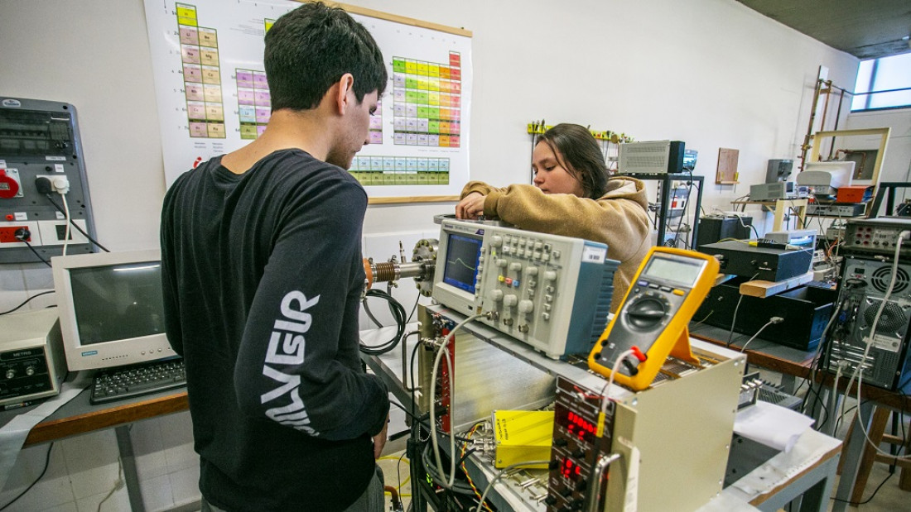

Ofertas Academicas del Instituto Politecnico Formosa. Dr. Marcelo Alberto Zorrilla
Tecnicatura Superior en Desarrollo de Software Multiplataforma
Tecnicatura Superior en Telecomunicaciones

Tecnicatura Superior en Mecatronica

Tecnicatura Superior en Quimica Industrial
Tecnicatura Superior en Desarrollo de Software Multiplataforma
La carrera tiene una duración de dos años con una carga horaria de 2.144 horas, con resolución N° 1416/21 del Ministerio de Cultura y Educación de la Provincia de Formosa.
Alcance del Perfil Profesional
El graduado de la Tecnicatura Superior en Desarrollo de Software Multiplataforma tendrá la capacidad de concebir soluciones innovadoras a los problemas asociados a las tareas de análisis, diseño, programación e implantación de software en diferentes plataformas, entornos y arquitecturas. Los mismos deben ser capaces de desarrollar soluciones demandadas por las empresas, la industria y el estado formoseño, ya sea individualmente o en equipos, y basados en una amplia experiencia practica obtenida durante el recorrido de la tecnicatura. Las empresas, el estado, las organizaciones locales, regionales o extranjeras, demandan estos perfiles junto con otros servicios de asesoramiento y consultoría, optimizando el desempeño de las insti- tuciones.
Régimen de Cursado
La carrera se divide en cinco cuatrimestres, durante los cuales el estudiante deberá regularizar los módulos correspondientes al cuatrimestre en curso.
Horario y modalidad de cursado
Jornada intensiva de lunes a viernes de 9 a 17 horas con almuerzo incluido.
Lugar
Polo Científico, Tecnológico & Innovación. Traslado con transporte público habilitado especialmente para los estudiantes.
Requisitos de Admisión
- - Título Secundario
- - Asistencia al Módulo de Nivelación (80%)
- - Aprobación del Módulo de Nivelación
Tecnicatura Superior en Telecomunicaciones
La carrera tiene una duración de 2,5 años con una carga horaria de 2252 horas reloj; al finalizar la misma se otorgará el título de Técnico Superior en Telecomunicaciones expedido por el Ministerio de Cultura y Educación de la Provincia de Formosa.
Alcance del Perfil Profesional
El Técnico Superior en Telecomunicaciones podrá, en el ejercicio de su profesión, desarrollar proyectos en el área específica, así como también gestionar y supervisar el montaje y mantenimiento de sistemas y equipos de telecomunicaciones y eventual hardware informático asociado, tales como redes de banda ancha y de radiocomunicaciones fijas y móviles, sistemas telemáticos; empleando la documentación técnica, normativa y procedimientos establecidos, asegurando el funcionamiento, la calidad, la seguridad y la conservación medioambiental.
Destinatarios
Jóvenes egresados de escuelas de nivel secundario, especialmente de escuelas técnicas con orientación electrónica, automatización e informática.
Régimen de Cursado
La carrera consta de cinco cuatrimestres. El estudiante deberá tener aprobado, al inicio de cada cuatrimestre, los módulos del cuatrimestre precedente.
Horario y modalidad de cursado
Jornada intensiva de lunes a viernes de 9 a 17 horas con almuerzo incluido.
Requisitos de Admisión
Aprobar el Curso introductorio virtual que incluye los módulos de Matemática y Física. Para aprobar se requiere un mínimo del 60 % de las actividades propuestas. Los aspirantes que resulten aprobados serán seleccionados por orden de mérito para completar un cupo máximo de 50 alumnos.
Tecnicatura Superior en Mecatronica
La carrera tiene una duración de tres años, con el reconocimiento provincial del Ministerio de Cultura y Educación de la Provincia de Formosa.
Alcance del Perfil Profesional
El Técnico Superior en Mecatrónica tiene un perfil fuertemente ligado al rubro industrial; sobre todo relacionado con instalaciones y procesos destinados a la fabricación de productos, mantenimiento y servicios. Estará capacitado de acuerdo con las actividades que se desarrollan en las funciones profesionales para: configurar sistemas mecatrónicos industriales, así como para planificar, supervisar y/o ejecutar su montaje y mantenimiento, siguiendo los protocolos de calidad, de seguridad y de prevención de riesgos laborales y cuidado ambiental. La inserción laboral del técnico en Mecatrónica contempla, entre otros, su rol como:
- - Técnico en planificación de procesos de mantenimiento de instalaciones de máquinas y equipos industriales.
- - Jefe de equipo de montajes de máquinas y equipos industriales.
- - Jefe de operación y/o producción industrial.
Régimen de Cursado
La carrera se divide en 6 cuatrimestres, durante los cuales el alumno deberá regularizar las materias correspondientes al cuatrimestre en curso.
Horario y modalidad de cursado
Lunes a Viernes de 17 a 22 horas.
Requisitos de Admisión
- - Título Secundario
- - Asistencia al Módulo de Nivelación (80%)
- - Aprobación del Módulo de Nivelación
Tecnicatura Superior en Quimica Industrial
La carrera tiene una duración de 2.5 años con una carga horaria de 2560 horas reloj, contará con una certificación propia del IPF, avalada por el Ministerio de Cultura y Educación de la Provincia de Formosa.
Alcance del Perfil Profesional
El Técnico Superior en Química Industrial estará capacitado para desempeñarse en un amplio espectro de industrias con procesos tecnológicos de base química; e instalaciones que requieran un auxiliar con sólida formación teórica y amplia experiencia práctica obtenida durante su formación técnica. Su formación, lo habilitará para organizar y controlar operaciones de plantas de proceso químico y de cogeneración de energía y servicios auxiliares asociados, supervisando y asegurando su funcionamiento, puesta en marcha y parada de procesos, verificando las condiciones de seguridad, calidad y ambientales establecidas. El técnico poseerá las herramientas necesarias para llevar a cabo distintos tipos de análisis de procesos químicos con la suficiente versatilidad para adaptarse y llevar a la práctica nuevos requerimientos específicos de diferentes tipos de empresas.
Destinatarios
Preferentemente egresados de escuelas técnicas de orientación en Química, Química de Procesos, Ambiente y Salud, y Tecnología de los Alimentos. También podrán aspirar egresados de escuelas secundarias de todas las modalidades.
Régimen de Cursado
La carrera se divide en cinco cuatrimestres, durante los cuales el estudiante deberá regularizar los módulos correspondientes al cuatrimestre en curso.
Horario y modalidad de cursado
Jornada intensiva de lunes a viernes de 9 a 17 horas con almuerzo incluido.
Requisitos de Admisión
Aprobar un Curso Introductorio de 4 meses de duración, que incluyen los módulos de Matemática, Física, Química, Lectura y Escritura Disciplinar y Perfil Profesional. La evaluación constará de un examen integrador. Para aprobar se requiere un mínimo de 60%. Los aprobados serán seleccionados por orden de mérito para completar el cupo máximo de 50 alumnos.